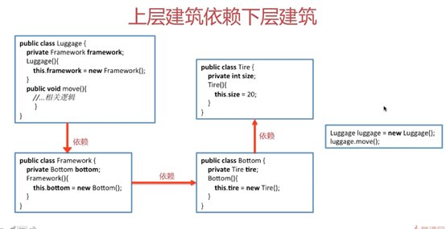
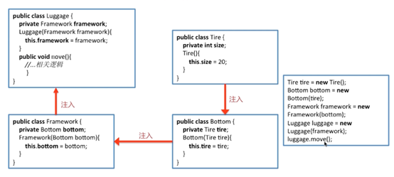
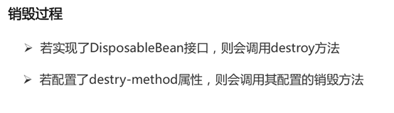

spring-concept
Spinrg基础知识点
- IOC（Inversion of Control）：控制反转
- 依赖注入
- 依赖注入的方式
- 依赖倒置原则，IOC、DI、IOC容器的关系
- IOC容器的优势
- Spring IOC支持的功能
- Spring IOC容器的核心接口
- BeanFactory：Spring框架最核心的接口
- BeanFactory与ApplicationContext的比较
- 三个常用的ApplicationContext实现是:
- GetBean方法的代码逻辑
- Spring Bean的作用域
- 关注点分离：不同的问题交给不同的部分去解决
- AOP的三种织入方式
- AOP的主要名词概念
- Advice的种类
- AOP的实现：jdkProxy和Cglib
- Spring里代理模式的实现
- 事务传播
- 什么是AOP
IOC（Inversion of Control）：控制反转
有了IoC容器后，把创建和查找依赖对象的控制权交给了容器，由容器进行注入组合对象，所以对象与对象之间是松散耦合，这样也方便测试，利于功能复用，更使得程序的整个体系结构变得非常灵活。
Ø Spring Core最核心的部分
Ø 需要了解依赖注入（Dependency Injection）

如果想把tire的size动态化改变就会牵一发而动全身，上层的代码也得修改
依赖注入
含义：把低层类作为参数传递给上层类，实现上层对下层的“控制”
将tire作为构造函数的参数传入，并赋值给上层的成员变量。

想要修改就可以只修改Tire的代码
DL是更主动的方法，会在需要的时候通过调用框架的方法来获取对象，获取时需要提供相关的文件路径，key等信息，来确定获取对象的状态。
DL已经被抛弃，因为它需要用户自己去使用API进行查找资源和组装对象，即有侵入性。
依赖注入的方式
Ø Setter
Ø Interface
Ø Constructor
Ø Annotation
依赖倒置原则，IOC、DI、IOC容器的关系
IOC容器的优势
Ø 避免在各处使用new来创建类，并且可以做到统一维护
Ø 创建实例的时候不需要了解其中的细节
在刚刚的例子中，我们是从低层往上层去new的，我们需要了解整个流程（从tire到luggage）的构造函数是怎么定义的才能一步步组装。
而依赖注入则是从最上层开始查找依赖关系，然后再往上一步一步去new。有点像DFS
蓝色部分是隐藏的细节
Spring IOC支持的功能
Ø 依赖注入
Ø 依赖检查
Ø 自动装配
Ø 支持集合
Ø 指定初始化方法和销毁方法
Ø 支持回调方法
Spring IOC容器的核心接口
Ø BeanFactory
Ø ApplicationContext
Spring容器启动的时候会将注解或者XML里面Bean的定义解析成Spring内部的BeanDefinition

是个ConcurrentHashMap
BeanFactory：Spring框架最核心的接口
Ø 提供IOC的配置机制
Ø 包含Bean的各种定义，便于实例化Bean
Ø 建立Bean之间的依赖关系
Ø Bean生命周期的控制
ApplicationContext是BeanFactory的子接口之一
BeanFactory与ApplicationContext的比较
Ø BeanFactory是Spring框架的基础设施，面向Spring
Ø ApplicationContext面向使用Spring框架的开发者
ApplicationContext的功能（实现多个接口）
Ø BeanFactory：能够管理、装配Bean
Ø ResourcePatternResolver：能够加载资源文件
Ø MessageSource：能够实现国际化等功能
Ø ApplicationEventPublisher：能够注册监听器，实现监听机制
三个常用的ApplicationContext实现是:
- ClassPathXmlApplicationContext:它从classpath路径下的一个XML文件加载context的,将Context作为classpath下的资源。加载应用程序classpath下的context使用的代码如下：
ApplicationContext context = new ClassPathXmlApplicationContext(“bean.xml”);
- FileSystemXmlApplicationContext:它从文件系统的一个XML文件加载上下文定义的。从文件系统加载应用程序上下文通过如下代码实现。
ApplicationContext context = new FileSystemXmlApplicationContext(“bean.xml”);
- XmlWebApplicationContext:它从一个web应用程序中包含的XML文件加载context。
GetBean方法的代码逻辑
Ø 转换beanName
Ø 从缓存中加载实例
Ø 实例化Bean
Ø 检测patternBeanFactory
Ø 初始化依赖的Bean
Ø 创建Bean
Spring Bean的作用域
Ø Singleton：Spring的默认作用域，容器里拥有唯一的Bean实例
Ø Prototype：针对每个getBean请求，容器都会创建一个Bean实例
Ø Request：会对每个HTTP请求创建一个Bean实例
Ø Session：会对每个Session创建一个Bean实例
Ø globalSession：会为每个全局Http Session创建一个Bean实例，该作用域仅对Portlet有效


关注点分离：不同的问题交给不同的部分去解决
Ø 面向切面编程AOP正是此种技术的体现
Ø 通用化功能代码的实现，对应的就是所谓的切面（Aspect）
Ø 业务功能代码和切面代码分开后，架构将变得高内聚低耦合
Ø 确保功能的完整性：切面最终需要被合并到业务中（Weave）
AOP的三种织入方式
Ø 编译时织入：需要特殊的Java编译器，如AspectJ
Ø 类加载时织入：需要特殊的Java编译器，如AspectJ和AspectWerkz
Ø 运行时织入：Spring采用的方式，通过动态代理的方式，实现简单
AOP的主要名词概念
Ø Aspect：通用功能的代码实现
Ø Target:被织入Aspect的对象
Ø Join Point：可以作为切入点的机会，所有方法都可以作为切入点
Ø Pointcut：Aspect实际被应用在的Join Point，支持正则
Ø Advice：类里的方法以及这个方法如何织入到目标方法的方式
Ø Weaving：AOP的实现过程
Advice的种类
Ø 前置通知（Before）
Ø 后置通知（AfterReturning）
Ø 异常通知（AfterThrowing）
Ø 最终通知（After）
Ø 环绕通知（Around）
AOP的实现：jdkProxy和Cglib
Ø 由AopProxyFactory根据AdvisedSupport对象的配置来决定
Ø 默认策略如果目标类是接口，则用JDKProxy来实现，否则用后者
Ø JDKProxy的核心：InvocationHandler接口和Proxy类
Ø Cglib：以继承的方式动态生成目标类的代理
Ø JDKProxy：通过Java的内部反射机制实现
Ø Cglib：借助ASM实现
Ø 反射机制在生成类的过程中比较高效
Ø ASM在生成类之后的执行过程中比较高效
代理模式：接口+真实实现类+代理类
Spring里代理模式的实现
Ø 真实实现类的逻辑包含在getBean方法里
Ø getBean方法返回的实际上是Proxy的实例
Ø Proxy实例是Spring采用JDK Proxy或Cglib动态生成的
事务传播
1.PROPAGATION_REQUIRED(默认实现)：当前没有事务则新建事务，有则加入当前事务
2.PROPAGATION_SUPPORTS：支持当前事务，如果当前没有事务则以非事务方式执行
3.PROPAGATION_MANDATORY：使用当前事务，如果没有则抛出异常
4.PROPAGATION__REQUIRES_NEW：新建事务，如果当前有事务则把当前事务挂起
5.PROPAGATION_NOT_SUPPORTED：以非事务的方式执行，如果当前有事务则把当前事务挂起
6.PROPAGATION_NEVER：以非事务的方式执行，如果当前有事务则抛出异常
7.PROPAGATION_NESTED：如果当前存在事务，则在嵌套事务内执行，如果当前没有事务，则执行1
| 隔离级别 | 描述 |
|---|---|
| DEFAULT | 使用数据库本身使用的隔离级别 ORACLE（读已提交） MySQL（可重复读） |
| READ_UNCOMITTED | 读未提交（脏读）最低的隔离级别，一切皆有可能。 |
| READ_COMMITED | 读已提交，ORACLE默认隔离级别，有幻读以及不可重复读风险。 |
| REPEATABLE_READ | 可重复读，解决不可重复读的隔离级别，但还是有幻读风险。 |
| SERLALIZABLE | 串行化，最高的事务隔离级别，不管多少事务，挨个运行完一个事务的所有子事务之后才可以执行另外一个事务里面的所有子事务，这样就解决了脏读、不可重复读和幻读的问题了 |
什么是AOP
在编译时，类加载时或运行时将通用代码切入到类的指定方法、指定位置上的编程思想就是面向切面的编程。